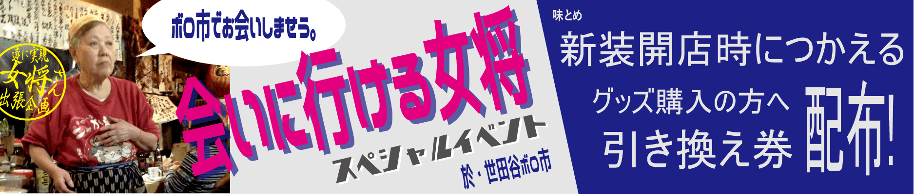

<!DOCTYPE html>
<html lang="ja">
  <head>
    <meta charset="utf-8">
    <meta http-equiv="X-UA-Compatible" content="IE=edge">
    <meta name="viewport" content="width=device-width, initial-scale=1.0">
    <meta name="description" content="三軒茶屋すずらん通り大衆割烹味とめ　世田谷アートフリマ出張を終えて"/>
    <meta name=”keywords” content=”tokyo,味とめ,Japan,味とめ,世田谷,アートフリマ,出張,グッズ販売,SANGEN-JAYA,三軒茶屋,三茶”/>         
    
    <link rel="icon" href="assets/img/ico/favicon.png">
    <link rel="shortcut icon" href="assets/img/ico/favicon.ico">
    <link rel="apple-touch-icon" href="assets/img/ico/apple-icon.png">

    <title>世田谷アートフリマ出張を終えて | 味とめ女将単独企画</title>

    <!-- Bootstrap core CSS -->
    <link href="assets/css/bootstrap.css" rel="stylesheet">


    <!-- Custom styles for this template -->
    <link href="assets/css/main9sp18his.css" rel="stylesheet">
    <!-- <link href="assets/css/main4sp39.css" rel="stylesheet"> -->
    <!-- <link href="assets/css/main4sp.css" rel="stylesheet"> -->

    <script src="https://code.jquery.com/jquery-1.10.2.min.js"></script>
    <script src="assets/js/hover.zoom.js"></script>
    <script src="assets/js/hover.zoom.conf.js"></script>

    <!-- HTML5 shim and Respond.js IE8 support of HTML5 elements and media queries -->
    <!--[if lt IE 9]>
      <script src="https://oss.maxcdn.com/libs/html5shiv/3.7.0/html5shiv.js"></script>
      <script src="https://oss.maxcdn.com/libs/respond.js/1.3.0/respond.min.js"></script>
    <![endif]-->
    <script>
      (function(i,s,o,g,r,a,m){i['GoogleAnalyticsObject']=r;i[r]=i[r]||function(){
      (i[r].q=i[r].q||[]).push(arguments)},i[r].l=1*new Date();a=s.createElement(o),
      m=s.getElementsByTagName(o)[0];a.async=1;a.src=g;m.parentNode.insertBefore(a,m)
      })(window,document,'script','https://www.google-analytics.com/analytics.js','ga');

      ga('create', 'UA-82227481-1', 'auto');
      ga('send', 'pageview');

    </script>
    <!-- [head]内や、[body]の終了直前などに配置 -->
    <script>
    window.twttr=(function(d,s,id){var js,fjs=d.getElementsByTagName(s)[0],t=window.twttr||{};if(d.getElementById(id))return;js=d.createElement(s);js.id=id;js.src="https://platform.twitter.com/widgets.js";fjs.parentNode.insertBefore(js,fjs);t._e=[];t.ready=function(f){t._e.push(f);};return t;}(document,"script","twitter-wjs"));
    </script>
    <!-- [head]内や、[body]の終了直前などに配置 -->
    <div id="fb-root"></div>
    <script>(function(d, s, id) {
	     var js, fjs = d.getElementsByTagName(s)[0];
	      if (d.getElementById(id)) return;
	       js = d.createElement(s); js.id = id;
	        js.src = "//connect.facebook.net/ja_JP/sdk.js#xfbml=1&version=v2.0";
	         fjs.parentNode.insertBefore(js, fjs);
         }(document, 'script', 'facebook-jssdk'));
    </script>
<!--    <script type="text/javascript">!function(d,i){if(!d.getElementById(i)){var j=d.createElement("script");j.id=i;j.src="https://widgets.getpocket.com/v1/j/btn.js?v=1";var w=d.getElementById(i);d.body.appendChild(j);}}(document,"pocket-btn-js");</script> -->
  </head>

  <body>

    <!-- Static navbar -->
    <div class="navbar navbar-inverse navbar-static-top">
      <div class="container">
        <div class="navbar-header">
          <button type="button" class="navbar-toggle" data-toggle="collapse" data-target=".navbar-collapse">
            <span class="icon-bar"></span>
            <span class="icon-bar"></span>
            <span class="icon-bar"></span>
          </button>
          <a class="navbar-brand" href="index.html">大衆割烹
            
          </a>
        </div>
        <div class="navbar-collapse collapse">
          <ul class="nav navbar-nav navbar-right">
          <li><a href="index.html" onclick="ga('send', 'event', 'mn_top', 'click', this.href);">店舗情報</a></li>
          <!-- <li><a href="sp_notice2017.html">休業のお知らせ</a></li> -->
          <li><a href="sp_thanks.html" onclick="ga('send', 'event', 'mn_sp_thnks', 'click', this.href);">ごあいさつ</a></li>
          <li><a href="ninjindemae/index.html" onclick="ga('send', 'event', 'mn_artflema_notice', 'click', this.href);">世田谷アートフリマ出張</a></li>
          <!-- <li><a href="sp_form2017.html">#ajitome_ole</a></li> -->
          <!-- <li><a href="drink.html">おのみもの</a></li> -->
          <!--<li><a href="taishidoakimatsyri.html">秋の赤飯まつり</a></li>-->
          <!-- <li><a href="happyhour/index.html">はっぴぃアワぁ</a></li> -->
          <!-- <li><a href="lunchmenu/index.html">ランチ・定食</a></li>           -->
          <!-- <li><a href="http://ajitome.xyz/articles/newcomers/index.html">祝☆新生活</a></li>                     -->
          <!-- <li><a href="androider.html">Androidのお客様〜♪</a></li> -->
          <li><a target="_blank" href="https://www.akaboshi-tanteidan.com/forza/anisanpo/anisanpo-no5/" onclick="ga('send', 'event', 'mn_go2akahosi', 'click', this.href);"><small><i>講談社様</i></small>『赤星 探偵団』</a></li>          
          <!-- 　 <li><a href="https://www.akaboshi-tanteidan.com/forza/anisanpo/anisanpo-no5/" target="_blank"><small><i>講談社様</i></small>『赤星 探偵団』</a></li> -->
          <!--　 <li><a href="http://www.aji10me.xyz" target=" _blank">Is the order a UNAGI?</a></li>-->
          <!--<li><a href="ajitomesamba.html">味とめサンバ</a></li>-->
          </ul>
        </div><!--/.nav-collapse -->
      </div>
    </div>

	<!-- +++++ Welcome Section +++++ -->
	<div id="ww">
	    <div class="container">
			<div class="row">
				<div class="col-lg-8 col-lg-offset-2 centered">
					<!---->
          <!---->
					<!--<p>三軒茶屋すずらん通り大衆割烹味とめ-->
          <!--<br><a href="http://ajitome.xyz" target="_blank">http://ajitome.xyz</a></p>-->
                    
          <h1>世田谷アートフリマ出張を終えて</h1>
          <p align="center">〜 味とめにとってのキャロットタワー 〜</p>
          <hr><!-- 20180505add -->
          <!-- <p align="left"><small><time datetime="2018-02-18">2018.02.18</time> update.2(<time datetime="2017-10-23">2017.10.23</time> update)</small></p>                     -->
          <p align="left"><small><time datetime="2018-05-06">2018.05.06</time> update</small></p>
          <!-- <p align="left"><small><time datetime="2017-10-23">2017.10.23</time> update.2(<time datetime="2017-10-21">2017.10.21</time> update)</small></p>                     -->
          <div class="recruite-headline">
          <center></center>
          <br><br>
          <!-- 01 boutou -->
            <p align="left">　味とめ女将特別出張企画と銘打っての春の第1弾出張先は<a target="_blank" href="http://www.t-build.com/build/ca/" onclick="ga('send', 'event', 'go2CarrotTower', 'click', this.href);">キャロットタワー</a>。当店のホームタウン三茶こと三軒茶屋のシンボル。神奈川県から多摩川を越え都内にむかう旅路、まだGPS付きスマホのような便利なものがなかった時代にも地図を片手に環状7号線の内側を走りながら空にそびえ立つレンガ色のタワーを目指せば三茶にたどり着く事ができた。中世に江戸幕府への参勤交代の足休めの茶屋まちとして栄えた町、我が三軒茶屋はずっと道ゆく者たちの道しるべでありたいという欲を抑えられないのかもしれない。</p>
            <!-- ながゞ50年<a href="ec-end-notice2017.html">ママさんグッズ</a>、 -->
          <!-- <br> -->
          <center>
              <div class="ninjin_image01">
                
              </div>
          </center>
          <br>
          <br>
          <!-- 01 boutou -->
          <!-- 02 boutou -->
          <p align="left">　全長124メートルのキャロットタワーの<a target="_blank" href="http://www.city.setagaya.lg.jp/shisetsu/1202/15598/d00004091.html" onclick="ga('send', 'event', 'go2CarrotTENBO', 'click', this.href);">展望台</a>に登れば、東京の街並みを一望でき、天気がよければ富士山も拝める世田谷の富士見塔でもある。</p>
        <br>
        <center>
            <div class="ninjin_image02">
              
            </div>
        </center>
        <br>
        <br>
        <!-- 02 boutou -->
        <!-- 03 boutou -->
          <p align="left">　また、展望台から階下に降りると東京でも屈指の演劇・舞台施設、<a target="_blank" href="https://setagaya-pt.jp/" onclick="ga('send', 'event', 'go2PublicTHR_link', 'click', this.href);">世田谷パブリックシアター</a>と<a target="_blank" href="https://setagaya-pt.jp/about/facilities/theatre_tram.html" onclick="ga('send', 'event', 'go2THRtoram_link', 'click', this.href);">シアタートラム</a>があり、年間多数の公演がなされ、多くの舞台関係者と観劇客がこの場所を訪れる世田谷の文化の発信地でもある。<br>　今年2018年で建立22年目のキャロットタワーだが、50年あまり三茶の地で商う当店の方がおねぇさん。それ故、当店とキャロットタワーとの関わりは、その建築からと実に古い。<br>　当店名物女将もキャロットタワーの建築工事、その建立を見守ったひとり。<br>
            <br>当時を振り返りながら、得意げに女将はこう語る。<br><br>「建設工事の関係者が昼ご飯や力仕事おわりの一杯にお越しくださった。舞台のこけら落としに向けて、何度も打合せを重ねる施設スタッフや芸能関係の方も良くいらしてくださった。わたしも、ねぎらいのごあいさつに足を運んだもの。」<br>
          </p>
        <!-- <br> -->
        <center>
            <div class="ninjin_image03">
              <!--  -->
                            
            </div>
        </center>
        <br>
        <br>
        <!-- 03 boutou -->
        <!-- 04 boutou -->
          <p align="left">そして、やや謙遜ぎみに女将はこう続ける。<br><br>「建築中、この界隈も、工事関係者で賑わったもの。通りの入り口に面し場所も良かったんだろうね。お昼どきや仕事おわりの建築関係の皆さまにご愛顧いただいた。音響工事の方々だったかな、何度もいらしてくださった。お昼にゃイワシ定食が良く出たよ。」
          </p>
        <!-- <br> -->
        <center>
            <div class="ninjin_image04">
              
              <br>
              <p>休業時の<a target="_blank" href="event/setsubunfes.html#iwashiMenu" onclick="ga('send', 'event', 'go2eventSetsubun_link', 'click', this.href);">当店名物イワシ料理</a><br>※当時、イワシ定食が人気を博した。</p>
            </div>
        </center>
        <br>
        <br>
        <!-- 04 boutou -->
        <!-- 05 boutou -->
          <p align="left">更に、当時を懐かしそうに語る女将。<br><br>「そんなお得意さまの中に著名な文筆家がいらして、その方が演劇情報誌にキャロットタワー特集でお店をこう紹介してくださったの」<br><br>終業式から帰宅し、成績が良かったと通信簿を得意げに親に見せる小学生のような屈託ない笑顔で、女将がそう教えてくれた当店紹介のことば…<br></p>
          <p align="center"><b>『幕がおりたら味とめへ』</b><br><br><br></p>
        <!-- <br> -->
        <center>
            <div class="ninjin_image05">
              
            </div>
        </center>
        <br>
        <br>
        <!-- 05 boutou -->
        <!-- 06 boutou -->
          <p align="left">　旧店舗の営業中は、キャロットタワーの公演表チェックも女将の日課のひとつ。お店のスタッフはことあるごとに女将からこう聞かれたもの。<br><br>「今月の舞台のスケジュールは！？」<br><br>そう尋ね、舞台公演の千秋楽をアタマに叩き込むと、女将は、スタッフに在庫を確認させ、ボロボロの暦を片手に予約状況を確認しながら、仕入れの発注に電話の受話器を手にとるのである。<br><br>
            発注の合間に予約の電話が鳴ればしめたもの！<br><br>建替工事のため一旦休業し、お店のこれ迄を振り返る時間もできた今だから話せる女将の味とめ奮闘の一幕。<br><br>　完成以降は、演劇・舞台の名所ともなったキャロットタワーでの観劇客が公演おわりに立ち寄り、演目の感想を肴にひっかけて帰えられるようになり、お目当ての演出家や演者さんの公演があれば「舞台おわりは味とめで一杯！」とおっしゃってくださる常連さまたちもついてくださるようになった。前出の当店を紹介くださった演劇情報誌を片手に当店の暖簾をはじめてくぐってくださった方々も今ではそんなありがたい当店のお得意さま。</p>
        <!-- <br> -->
        <center>
            <div class="ninjin_image06">
              
            </div>
        </center>
        <br>
        <br>
        <!-- 06 boutou -->
        <!-- 07 boutou -->
          <p align="left">　20数年前といえば、テレビもまだまだお茶の間の人気者だった時代、舞台だけに止まらずテレビ関係のお仕事でも活躍される方々にもご利用されはじめ、当店は徐々に、テレビ番組でも取材をうけるようになり、在京テレビ関係者の間で有名なお店のひとつにお加えいただけるようなった。<br><br>旧店舗の<a href="index.html#lassttvshowdblthanks" onclick="ga('send', 'event', 'go2tvkaikyo_link', 'click', this.href);">休業までの半年間は毎月お茶の間に登場</a>するほど、番組関係者にも愛されるようになったのには、今回の出張先であるキャロットタワーの建立における当店と店主・女将のたゆまぬ努力があった。</p>
        <!-- <br> -->
        <center>
            <div class="ninjin_image07">
              
            </div>
        </center>
        <br>
        <br>
        <br>
        <br>
        <!-- 07 boutou -->
        <!-- 08 boutou -->
          <p align="left">　<a target="_blank" href="ninjindemae/index.html" onclick="ga('send', 'event', 'go2Artflema_notice', 'click', this.href);">世田谷アートフリマ出張</a>おわりに、すずらん通りから夕日を背に高くそびえるレンガ色のタワーをふたたび見上げ、夏日並みに気温が上昇し高齢には堪えた長い1日ではあったが、無事に初出展を果たせ、自ら先頭に立ち、地道に積み重ね、味とめのことを老舗とおっしゃってくださる皆さまの顔を思い出しながら、そう感慨深く微笑む女将。</p>
        <!-- <br> -->
        <center>
            <div class="ninjin_image08">
              
            </div>
        </center>
        <br>
        <br>
        <!-- 08 boutou -->
        <!-- 09 boutou -->
          <p align="left">　キャロットタワーには地元のコミュティラジオ<a target="_blank" href="http://fmsetagaya.com/" onclick="ga('send', 'event', 'go2FmSetagaya_link', 'click', this.href);">エフエム世田谷</a>が<a target="_blank" href="http://www.fmsetagaya.co.jp/studiocarrot.htm" onclick="ga('send', 'event', 'go2studio_link', 'click', this.href);">サテライトスタジオ</a>を構えており、この天空スタジオからのラジオ番組放送もある。昨年9月には、毎月テレビ取材を受ける合間をぬって、女将がお店の料理とともに、同エフエム世田谷の番組<a target="_blank" href="https://www.facebook.com/NagaeDarada" onclick="ga('send', 'event', 'go2NagaeDarada_link', 'click', this.href);">「金パラ～長江健次のDARADAラジオ」</a>への<a href="index.html#radioshownotice" onclick="ga('send', 'event', 'go2topAradioshow', 'click', this.href);">生出演を果たし、</a>ご愛顧くださるファンの皆さまへ、お店が休業に入りご迷惑をかけると、自らの肉声にて、公共の電波にのせてお詫びする場と機会を与えいただいたのも、また、今回の出張先、キャロットタワーである。</p>
        <!-- <br> -->
        <center>
            <div class="ninjin_image09">
              
            </div>
        </center>
        <br>
        <br>
        <br>
        <!-- 09 boutou -->
        <!-- 10 boutou -->
          <p align="left">　この度の世田谷アートフリマ出張は、味とめ店主・辻教子にとって、ファンの皆さまに待ち望まれし新装開店までの長き険しき旅路にすぎない。<br><br>次回、乞うご期待！<br></p>
        <!-- <br> -->
        <br>
        <p align="right"><small><b>味とめ電脳部</b></small></p>
        <br>
        <!-- 10 boutou -->                                                                          
        </div>
        <!-- <hr> -->
        <!-- kokomade -->
          <!-- <p><br><b><small>＼\味とめオーレ/／</small><br><a href="sp_form2017.html">#ajitome_ole</b></a><br></p> -->
          <p></p>
          <!-- kurolink banner -->
          <p align="center"><a target="_blank" href="fukurofes/index.html" onclick="ga('send', 'event', 'go2fuku6fes_notice', 'click', this.href);"></a><br></p>
          <!-- booth banner -->          
          <a href="https://ajitomedigital.booth.pm" target="_blank" onclick="ga('send', 'event', 'go2booth_link', 'click', this.href);">
            <p align="center">味とめ 購買部 BOOTH店 WEB 販売中<br></p>
          </a>          
          <!-- <hr> -->
          <p><br></p>
          <p>三軒茶屋すずらん通り大衆割烹味とめ
          <br><a href="http://ajitome.xyz" target="_blank">http://ajitome.xyz</a></p>
          <p><br></p>
          <p></p>
          <p><h4><span>お店までの地図</span></h4></p>
          <div class="access-gmap">
            <iframe src="https://www.google.com/maps/embed?pb=!1m14!1m8!1m3!1d51880.79262792406!2d139.650892!3d35.63883!3m2!1i1024!2i768!4f13.1!3m3!1m2!1s0x6018f49f60d40975%3A0x60ec847c610bf6a0!2z5pel5pysLCDjgJIxNTQtMDAwNCDmnbHkuqzpg73kuJbnlLDosLfljLrlpKrlrZDloILvvJTkuIHnm67vvJLvvJPiiJLvvJc!5e0!3m2!1sja!2sjp!4v1471202428275" width="100%" height="300" frameborder="0" style="border:0" allowfullscreen></iframe>
          </div>
          <p><br></p>
          <p><span></span></p>
          <!-- <p class="info"><span>営業時間：月～金 9:30～23:00(OL) 土・日・祝 15:30～23:00(OL)</span></p> -->
          <p class="info"><span><del>営業時間：月～金 9:30～23:00(OL) 土・日・祝 15:30～23:00(OL)</del></span></p>
          <!-- <p><span>定休日：不定月曜休</span></p> -->
          <p><span><del>定休日：不定月曜休</del></span></p>
          <!-- <p><span><h4>ご予約・お問合せ<br><strong>03-3422-5845</strong></h4></span></p> -->
          <p><span><h4>休業中のお問合せ<br><strong>03-3422-5845</strong></h4></span></p>
          <p></p>

        </div><!-- /col-lg-8 -->
			</div><!-- /row -->
	    </div> <!-- /container -->
	</div><!-- /ww -->


	<!-- +++++ Projects Section +++++ -->

	<div class="container pt">
		<div class="row mt centered">
      <div class="col-lg-4">
<!--        <h4>エスパニョーラも舌をまいた！</h4>
				<div class="content">
          <iframe allowfullscreen marginheight="0" marginwidth="0" frameborder="0" id="iframe"
             src="https://amp.twimg.com/amplify-web-player/prod/source.html?vmap_url=https%3A%2F%2Famp.twimg.com%2Fprod%2Fmultibr_v_1%2Fvmap%2F2016%2F05%2F17%2F14%2F732577407736152064%2Fbae6f109-a173-42bc-9779-b35877a724ed.vmap&duration=110.826&image_src=https%3A%2F%2Famp.twimg.com%2Fprod%2Fdefault%2F2016%2F05%2F17%2F14%2Feb2e0b7c-c477-4386-a210-b3c09eebb700_poster-1000.jpg&content_id=732577407736152064&page=amplify_card">
          </iframe>
        </div>
        <h5><a target="_blank" href="https://twitter.com/CanalCocina">@CanalCocina</a></h5> 
        <p>スペインのクッキングサイトの取材を受けました。只今、Twitter Movie でご覧になれます。<br>　　
      　</p>　-->
      </div>
      <div class="col-lg-4">
<!-- <h4>味とめサンバ・ラリー</h4>  -->
<!-- 	<a class="zoom green" href="https://aji10mentes.stamprally.net/" target=" _blank">  -->
       
<!--         </a>
     <p>期間限定スマホ・スタンプラリーを勝手に開催！<br>スマホがあれば無料で参加できますよー！<br>会場カイワイを巡りながらスタンプ集めてサンバフェスをより満喫</p>
   -->
    </div>
      <!--
			<div class="col-lg-4">
				<a class="zoom green" href="work01.html"></a>
				<p>RAIDERS</p>
			</div>
			<div class="col-lg-4">
				<a class="zoom green" href="work01.html"></a>
				<p>VIKINGS</p>
			</div>
		</div>
		<div class="row mt centered">
			<div class="col-lg-4">
				<a class="zoom green" href="work01.html"></a>
				<p>YODA</p>
			</div>
			<div class="col-lg-4">
				<a class="zoom green" href="work01.html"></a>
				<p>EMPERORS</p>
			</div>
			<div class="col-lg-4">
				<a class="zoom green" href="work01.html"></a>
				<p>CHIEFS</p>
			</div>　-->
		</div><!-- /row -->
	</div><!-- /container -->


	<!-- +++++ Footer Section +++++ -->

	<div id="footer">
    <div class="pagetop" style="float: right"><a href="#" class="page-top-btn">▲トップ</a></div>
		<div class="container">
			<div class="row">
        <div class="col-lg-4">
          <p></p>
          <h5>三軒茶屋すずらん通り大衆割烹味とめ(休業中)</h5>
					<p>
						〒154-0004<br/>東京都世田谷区太子堂4-23-7<br/>
						電話番号：03-3422-5845<br/>
					</p>
				</div><!-- /col-lg-4 -->

<!--				<div class="col-lg-4">
					<h4>My Links</h4>
					<p>
						<a href="#">Dribbble</a><br/>
						<a href="#">Twitter</a><br/>
						<a href="#">Facebook</a>
					</p>
				</div> /col-lg-4 -->
			  <div class="col-lg-4">
					<!-- <h4></h4> -->
					<p>
            <!--						<a href="#">Dribbble</a><br/>
             シェアボタンに変換される -->
            <div class="fb-like" data-href="http://ajitome.xyz/" data-layout="button_count" data-action="like" data-show-faces="true" data-share="false"></div>
						<!--	<a href="#">Twitter</a><br/>  -->
            <!-- この要素がJavaScriptによってシェアボタンに変わる
            <a data-pocket-label="pocket" data-pocket-count="vertical" class="pocket-btn" data-lang="en"></a> -->
            <br/><br/>
            <!-- シェアボタンに変換される -->
            <a class="twitter-share-button" href="https://twitter.com/share" data-dnt="true">Tweet</a>
						<!-- <a href="#">Facebook</a> -->
					</p>
          <p>
            <!-- 画像のURLを指定すること
            <a href="http://line.me/R/msg/text/?{message}">
  	           
            </a> -->
        </p>
				</div>
        <div class="col-lg-4">
					<h4></h4>
					<p><br/><br/><br/><br/>Copyright 2016-2018 味とめ All Right Reserved</p>
				</div><!-- /col-lg-4 -->

			</div>

		</div>
	</div>


    <!-- Bootstrap core JavaScript
    ================================================== -->
    <!-- Placed at the end of the document so the pages load faster -->
    <script src="assets/js/bootstrap.min.js"></script>
  </body>
</html>
